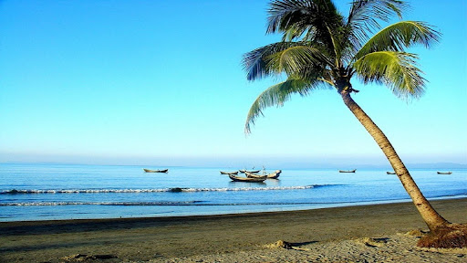

1. Kuakata
Kuakata (Bengali: কুয়াকাটা) is a town in southern Bangladesh known for its panoramic sea beach.[1][2] Kuakata beach is a sandy expanse 18 kilometres (11 mi) long and 3 kilometres (1.9 mi) wide.[3] From the beach one can have an unobstructed view of both sunrise and sunset over the Bay of Bengal. The name Kuakata originated from the word 'kua' — the Bengali word for "well" which was dug on the seashore by the early Rakhine settlers(Burmese tribes) in quest of collecting drinking water.[4] They landed on the Kuakata coast in the 18th century after being expelled from Arakan (Myanmar) by the Burmese extremists .[5] Afterwards, it has become a tradition of digging wells in the neighbourhoods of Rakhaine tribes for water. Kuakata is situated in Kalapara Upazila, Patuakhali District. It is about 320 kilometres (200 mi) south of Dhaka, the capital, and about 70 kilometres (43 mi) from the district headquarters. Kuakata is a place of pilgrimage for Hindu and Buddhist communities. Innumerable devotees arrive here at the festivals of 'Rush Purnima' and 'Maghi Purnima'. On these occasions the pilgrims take holy baths at the bay and participate in the traditional fairs.[1] One may visit a 100-year-old Buddhist temple where the statue of Goutama Buddha and two 200-year-old wells are located.
2. Guava Market
Guava Market: The southern region of Bangladesh is famous for guavas, more popularly known in Bangladesh as ‘Bengal’s Apple’. Especially in Jhalakathi Sadar Upazila and at Swarupkathi and Banaripara Upazila in Pirozpur, farmers heavily rely on guava farming. Such diversity of life is hardly to be found in other places of the country. Loss in guava farming in one season usually leads to extreme distress for the farmers throughout the year. The current year is one of those. The eye-soothing guava orchards on canals over Jhalakathi’s Sugandha, Bishkhali, Gabkhan and Sandhya River are Southern region’s main places of guava farming. Every day, thousands of tons of guavas are supplied all across the country. Boats are the main transportation for supplying. Farmers carry the guavas onto the boats from the river-adjacent orchards. There are hundreds of boats filled with guava and all the trades occur on boats. The floating market appears as the centre of Barisal’s (aka The Venice of Bengal) beauty. Nobody knows when the idea of this floating market began, but it’s a hundred-year old tradition. Development and modernization are taking over the country but it’s surprising to see them not reaching to this river-oriented life yet. For more than 100 years, the local farmers have been experiencing the ups and downs of life along with the ebb and flow of the river. Many farmers and wholesalers gather here every day. Not only guava, there are other fruits sold in this market. Boat Market: Boat makers at the weekly “Noukar Haat” (boat market) in Kuriana (কুড়িয়ানা) under the Swarupkathi upazila of Pirojpur district are doing brisk business during this monsoon season. The two-kilometre-long marketplace is noted for the trade in different varieties of boats during the monsoon season. The market runs every Friday from May to November. “Panis” or “Pinis”, “Dingi” and “Naak Golui” are the types of boats available for sale, built by local craftsmen from the Muktahar, Chami, Boldia, Inderhaat, Boitha Kata, Dubi and Kathali villages. After reaching at Barisal Rupatoli bus stand, take “Dhanshiri Paribahan” leaving for Khulna. Ask the bus supervisor to stop at Kirtipasha Mor in Jhalakathi. Bus fare would be 60 taka. From there, take shared Auto Rickshaw to reach Vimruli by paying 20-30 taka.

3. Guthia Mosque
The Baitul Aman Jame Masjid Complex (Bengali: বাইতুল আমান জামে মসজিদ), commonly known as Guthia Mosque (Bengali: গুঠিয়া মসজিদ) of Barisal, is a mosque complex of Bangladesh having a land area of 14 acres, comparing to the 8.30 acres land area of the national mosque Baitul Mukarram of the country.[1][2] The Baitul Aman Jame Masjid Complex consists of a mosque, a large eidgah, a graveyard, three lakes, a madrasa and an orphanage.[2] Established on December 16, 2003, Guthia Mosque is also a tourist spot in Bangladesh. Construction of the mosque complex began on December 16, 2003, under the supervision of SAS Foundation.[4] The complex is a private initiative by Sharfuddin Ahmed, a local politician, and a businessman.[3] The mosque took four years and one month to be completed. The complex was designed by a group of Bangladeshi architects. The cost of the construction in those times was 200 million BDT. The complex was inaugurated on October 20, 2006, with three great lakes, a mosque, an orphanage, a madrasa, an Eidgah and 58 meters high minaret constructed of white marble. The mosque complex stands on 14 acres. The mosque itself consists of 20 domes. The three lakes surrounding the mosque are situated so that they reflect the whole mosque from different angles. Gardens are placed around the lakes and the mosque. A number of calligraphies of Ayatul Kursi are found around the mosque and the inner part of dome of the mosque also has the Ayatul Kursi carved on it. The inner wall of the mosque has the Surat ar-Rahman written on it. The inner part of the mosque has a capacity of 1,400 people, while the outer has a capacity of 5,000 people. Several thousand people can pray in the Eidgah adjacent to the mosque at a time. The 58 meters high minaret of the mosque is the tallest in the country. A graveyard stands on the south-eastern part of the complex.

4. Kuakata Buddhist Temple
Misripara Seema Buddha Bihar is a Buddhist temple located at Misripara village of Latachapli Union Parishad in Patuakhali District.[1] Though it's a place of worship for Buddhists, it has become a tourist spot for many tourists who come to visit the kuakata sea beach. This temple has a big statue of Gautama Buddha, and is locally known as Misripara Buddha Mandir. It is four kilometers away from Kuakata Buddhist Temple.

5. Sheikh Hasina Cantonment
Sheikh Hasina Cantonment is the headquarter of 7th Infantry Division of Bangladesh Army.[1] It is located in Lebukhali, Patuakhali. The area of the cantonment is 1532 acres. The project will be completed by the Ministry of Defence by June 2021. The "Sheikh Hasina Cantonment" will be established as part of the governments long-term modernization scheme for Bangladesh Armed Forces called the "Forces Goal 2030". Prime Minister Sheikh Hasina green lighted the project in 2014.[4] She first announced it during a winter exercise of Bangladesh Armed Forces on January 16, 2015. The Executive Committee of the National Economic Council approved the project ‘Establishment of Sheikh Hasina Cantonment, Barisal’ on November 14, 2017. The set up of this cantonment will cost approximately Tk 1,699 crore. On February 8, 2018 Prime Minister Sheikh Hasina inaugurated the cantonment.

6. Gangamati Reserved Forest
Gangamati Reserved Forest is an evergreen mangrove forest in the Kuakata Patuakhali Bangladesh. It is located on the eastern end of the beach of Kuakata. Distance from Gangamati Reserved Forest to Sundarban is one hour by speedboat. The best way to reach the Gangamati Reserved Forest is by foot or bike along the beach. Many of flag flying on the fishing boats can be seen at the coast when someone will walk beside the beach. The most attractive place at Gongamoti is the Gongamotir Lake. Kuakata was part of the Sundarban forest when the Rakhyne community settled in that area in 1784. Basically the Gangamati Reserved Forest is the additional part of the Sundarban forest in Bangladesh. Gangamoti Reserved Forest protects the coast of Kuakata against tidal surges. The Gangamati Reserved Forest provides an opportunity to view a small mangrove forest. There are many types of trees and plants in this forest like keora, gewa, baen, kankra, goran, hetal, golpata and numbers of wild animals like wild boar, deer, monkey and different types of birds found in this forest. Evening is the perfect time to view the sun caste shadows on the abstract exposed mangrove roots. Gongamati is a forest where traveler will see the various kinds of birds, evergreen forest, big trees, sands etc. Gongamoti bon is slightly away from Kuakata sea beach so traveler can visit here easily.